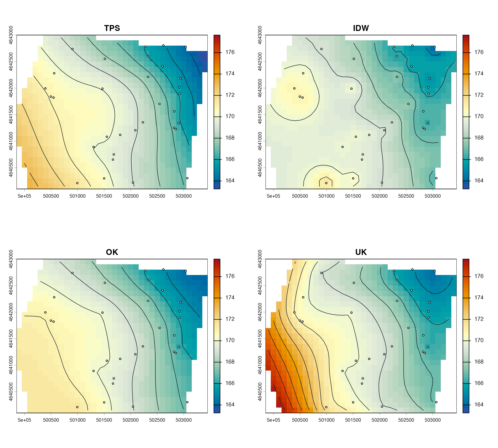
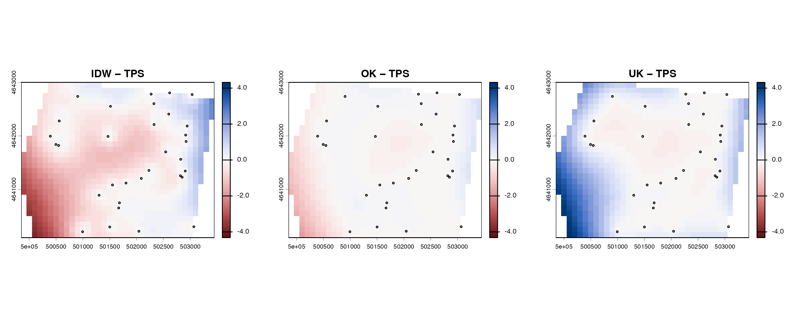

Comparing TPS, IDW, ordinary kriging, and universal kriging
interpolation-methods.RmdInterpolation choice should reflect monitoring-network geometry, site understanding, assumptions, and validation—not visual smoothness alone. This comparison holds the observations, projected CRS, area of interest, 100-metre grid, raster geometry, and mask constant.
One common template
data("synthetic_wells", package = "potentiomap")
points <- ps_make_points(
synthetic_wells, "x", "y", "gw_elevation", "well_id", "EPSG:26916"
)
aoi <- ps_sample_aoi()
template <- rast(crs = crs(points), ext = ext(aoi), resolution = 100)
template
#> class : SpatRaster
#> size : 29, 36, 1 (nrow, ncol, nlyr)
#> resolution : 100, 100 (x, y)
#> extent : 499850, 503450, 4640100, 4643000 (xmin, xmax, ymin, ymax)
#> coord. ref. : NAD83 / UTM zone 16N (EPSG:26916)Fit all four released methods
surfaces <- ps_interpolate(
points,
methods = c("TPS", "IDW", "OK", "UK"),
template = template,
mask = aoi,
idw_power = 2,
idw_nmax = 15,
tps_lambda = NULL,
kr_auto_cutoff = TRUE
)
#> Warning:
#> Grid searches over lambda (nugget and sill variances) with minima at the endpoints:
#> (GCV) Generalized Cross-Validation
#> minimum at right endpoint lambda = 1.812476e-05 (eff. df= 30.40003 )
#> [inverse distance weighted interpolation]
#> Warning in gstat::fit.variogram(empirical, model0, fit.sills = TRUE, fit.ranges
#> = TRUE, : No convergence after 200 iterations: try different initial values?
#> [using ordinary kriging]
#> [using universal kriging]
names(surfaces)
#> [1] "TPS" "IDW" "OK" "UK"The displayed TPS or variogram warnings are part of the actual fit. A warning does not establish that a model is fit for a consequential decision; inspect diagnostics and validate against withheld observations when that decision requires it.
do.call(rbind, lapply(names(surfaces), function(method) {
r <- surfaces[[method]]
data.frame(
method = method,
rows = nrow(r), columns = ncol(r),
x_resolution_m = res(r)[1], y_resolution_m = res(r)[2],
minimum = minmax(r)[1], maximum = minmax(r)[2]
)
}))
#> method rows columns x_resolution_m y_resolution_m minimum maximum
#> 1 TPS 29 36 100 100 163.2509 173.3224
#> 2 IDW 29 36 100 100 164.1760 171.3948
#> 3 OK 29 36 100 100 164.0498 171.5606
#> 4 UK 29 36 100 100 164.1790 177.6413Surfaces and contours on one head scale
common_range <- range(unlist(lapply(surfaces, minmax)), finite = TRUE)
contours <- lapply(surfaces, ps_contours, interval = 1)
par(mfrow = c(2, 2), mar = c(3, 3, 3, 1))
for (method in names(surfaces)) {
plot(surfaces[[method]], col = head_cols, range = common_range, main = method)
plot(contours[[method]], add = TRUE, col = "#17252d", lwd = .9)
plot(points, add = TRUE, pch = 21, bg = "white", cex = .55)
}
TPS uses a thin-plate spline and its smoothing parameter; IDW is controlled by power and neighbor selection. OK estimates a constant-mean geostatistical surface, while UK uses the released quadratic drift specification. The package fits an empirical variogram for the kriging methods.
Differences relative to TPS
differences <- lapply(surfaces[c("IDW", "OK", "UK")], function(x) x - surfaces$TPS)
do.call(rbind, lapply(names(differences), function(method) {
x <- differences[[method]]
data.frame(
comparison = paste(method, "minus TPS"),
mean_difference = global(x, "mean", na.rm = TRUE)[[1]],
mean_absolute_difference = global(abs(x), "mean", na.rm = TRUE)[[1]],
maximum_absolute_difference = global(abs(x), "max", na.rm = TRUE)[[1]]
)
}))
#> comparison mean_difference mean_absolute_difference
#> 1 IDW minus TPS -0.4724818 0.7686389
#> 2 OK minus TPS -0.1063588 0.1894084
#> 3 UK minus TPS 0.5444687 0.6456770
#> maximum_absolute_difference
#> 1 3.874599
#> 2 1.764410
#> 3 4.318976
limit <- max(abs(unlist(lapply(differences, minmax))), na.rm = TRUE)
par(mfrow = c(1, 3), mar = c(3, 3, 3, 1))
for (method in names(differences)) {
plot(differences[[method]], col = diff_cols, range = c(-limit, limit),
main = paste(method, "− TPS"))
plot(points, add = TRUE, pch = 21, bg = "white", cex = .45)
}
No method is universally best. Compare results against hydrogeologic boundaries, screened intervals, surface-water controls, network spacing, and an appropriate validation strategy. Increased smoothness or visual detail is not evidence of increased accuracy.